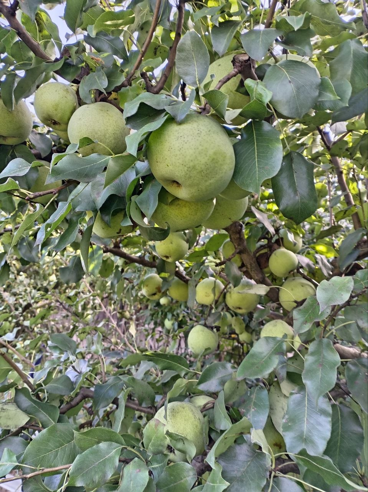
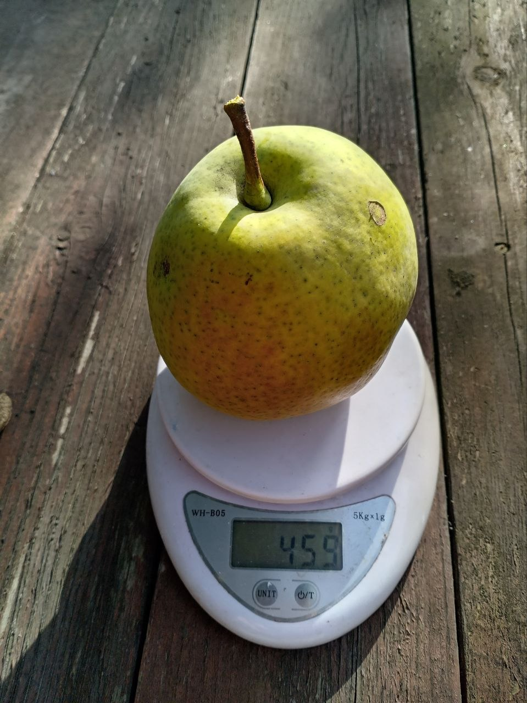
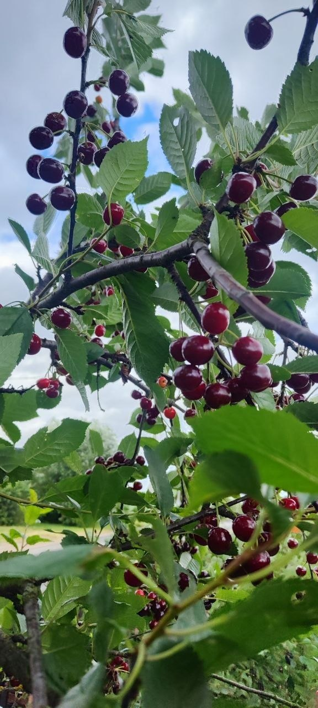
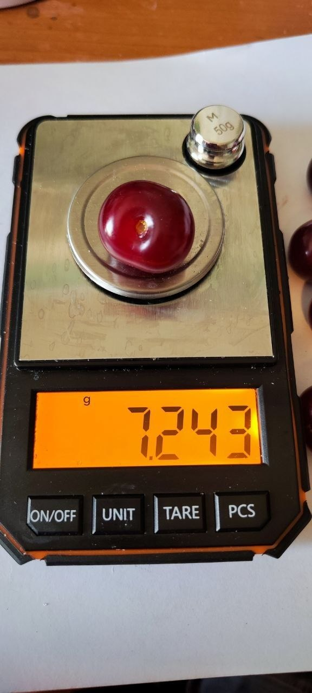
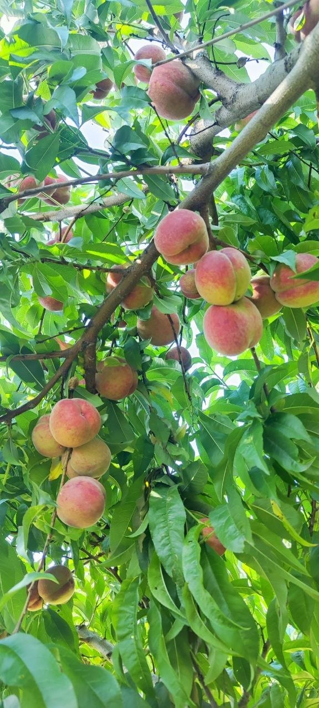
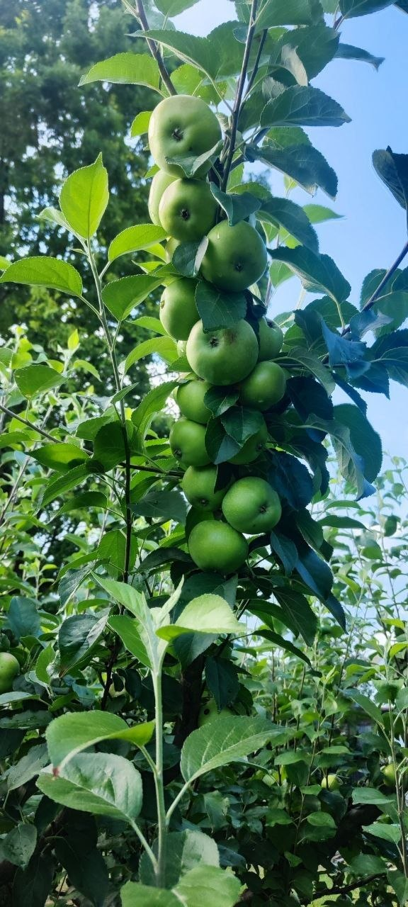
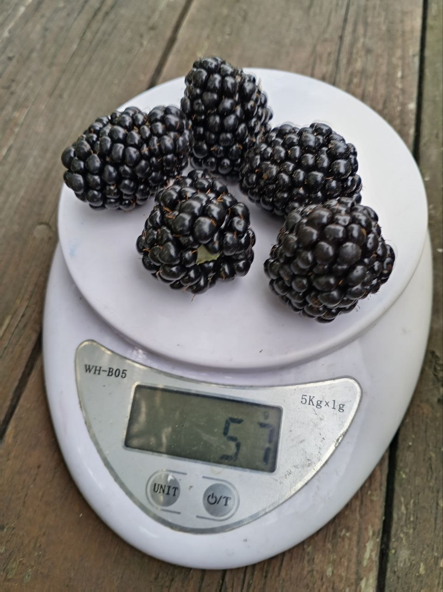
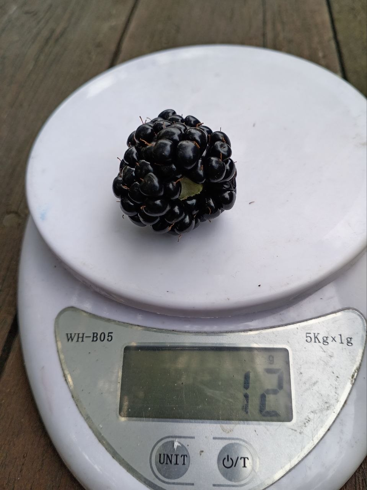

Обрезка плодовых деревьев и стрижка декоративных растений — Минская область
Смолевичский, Борисовский и Минский районы. Обрезка плодовых, формирование кроны, стрижка туй, живой изгороди и декоративных кустарников. Опыт 30 лет, научный подход.
Получить консультацию
Почему стоит доверить сад мне
Выпускник Белорусской государственной сельскохозяйственной академии
30 лет практического опыта работы с плодовыми и декоративными деревьями
Научный подход к обрезке — не «как сосед посоветовал», а по биологии дерева
Аккуратность, чистый участок после работы
Обрезка плодовых деревьев
Санитарная обрезка — удаление сухих, больных и повреждённых ветвей
Формирующая обрезка — создание правильной кроны молодого дерева
Омолаживающая обрезка — восстановление старых и запущенных деревьев
Обрезка яблони, груши, сливы, вишни, черешни, абрикоса, персика, алычи
Стрижка и формирование декоративных растений
Стрижка туй — формирование кроны, поддержание формы, санитарная стрижкаСтрижка живой изгороди — из туи, самшита, боярышника, кизильника, барбариса, спиреиФормирование декоративных деревьев — липа, клён, рябина, ива, хвойныеСтрижка декоративных кустарников — можжевельник, кизильник, барбарис, спирея, деренТопиарная стрижка — придание фигурных форм (шар, куб, конус)
С какими растениями работаю
Плодовые деревья: яблоня, груша, слива, вишня, черешня, абрикос, персик, алычаПлодовые кустарники: голубика, смородина, крыжовник, жимолость, малинаДекоративные деревья: липа, клён, рябина, ива, каштан, хвойныеДекоративные кустарники: туя, можжевельник, самшит, кизильник, барбарис, спирея, дерен, боярышник
Районы работы
Минская область:
Смолевичский район: Смолевичи, Жодино, Слобода, Озерицкая Слобода, Заболотье, Усяж, Драчково, Курганье, Плиса, Смольница и садовые товарищества районаБорисовский район: Борисов, Лошница, Неманица, Староборисов, Большая Ухолода, Забашевичи, Веселово, Кищина Слобода и садовые товарищества районаМинский район: Боровляны, Колодищи, Сеница, Гатово, Михановичи, Новый Двор, Ждановичи, Мачулищи, Заславль и садовые товарищества районаПо договорённости: Логойский, Дзержинский, Пуховичский районы
Выезд по Смолевичскому, Борисовскому и Минскому районам — бесплатный осмотр. В отдалённые точки — обсуждаем отдельно.
Цены
Санитарная обрезка плодовых — от 15 BYN за дерево
Формирующая обрезка плодовых — от 5 BYN за дерево
Омолаживающая обрезка плодовых — от 50 BYN за дерево
Стрижка туи — от 15 BYN за растение
Чистка туи — от 50 BYN за час
Стрижка живой изгороди — от 50 BYN за час
Стрижка декоративных кустарников — от 10 BYN за куст
Обработка сада и газона — от 70 BYN за час
Ниваки — от 60 BYN за час
Выезд и осмотр — бесплатно в пределах Смолевичского, Борисовского и Минского районов
Окончательная стоимость определяется после осмотра растения.
Калькулятор стоимости
Выберите тип работы и укажите количество — я покажу предварительную стоимость.
Тип работы:
Санитарная обрезка плодовых — 15 BYN/дерево
Формирующая обрезка плодовых — 5 BYN/дерево
Омолаживающая обрезка плодовых — 50 BYN/дерево
Стрижка туи — 15 BYN/растение
Чистка туи — 50 BYN/час
Стрижка живой изгороди — 50 BYN/час
Стрижка декоративных кустарников — 10 BYN/куст
Обработка сада и газона — 70 BYN/час
Ниваки — 60 BYN/час
Количество (деревьев, кустов или часов):
Рассчитать
Предварительная стоимость: —
Предварительная стоимость. Окончательная — после осмотра.
Мои работы и результаты
Вот как выглядят деревья после обрезки и какой урожай они дают.
Опыт более 30 лет — результат на фото.

Груша после омолаживающей обрезки. Ветки выдерживают урожай.

Вес одной груши — 459 г. Результат правильной формировки кроны.

Вишня. Урожайность после прореживания кроны.

Вес одной вишни — 12,4 г. Крупный плод — итог грамотной обрезки.

Персик. Здоровые плоды на правильно сформированном дереве.

Яблоня. Обильное плодоношение после омолаживающей обрезки.

Урожай ежевики с куста — 57 г (крупные ягоды).

Вес одной ягоды ежевики — 12 г. Показатель правильного ухода.
© 2025 Обрезка деревьев и стрижка декоративных растений — Минская область, Смолевичский, Борисовский и Минский районы.
×
Выберите удобный мессенджер